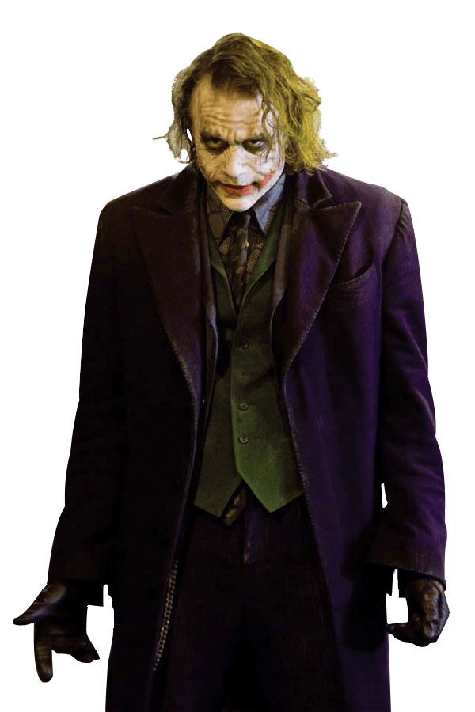
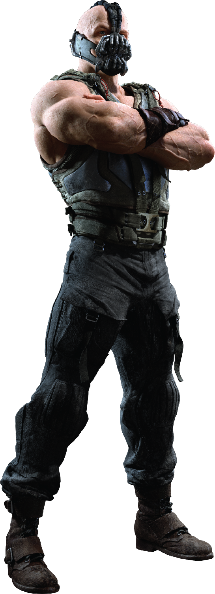

Batman The Dark Knight
Christian Bale as Bruce Wayne / Batman:
A billionaire socialite who, after witnessing his parents' death in a mugging a
t age 8, travels the world for seven years before returning home to operate as a bat-masked
vigilante hailed as Gotham City's "Dark Knight", using fear against the city's criminal underworld
at night. Bale said he was confident in his choice to return in the role because of the positive response
to his portrayal in Batman Begins. He continued training in the Keysi Fighting Method and performed many
of his own stunts, but did not gain as much muscle as in the previous film because the new Batsuit allowed
him to move with greater agility. Bale described Batman's dilemma as whether "[his crusade is] something that has
an end. Can he quit and have an ordinary life?
Gordon
James 'Jim' Gordon is portrayed by Gary Oldman in Nolan's film series. A stern and moral officer, Gordon initially loses
hope of protecting Gotham when he sees just how corrupt it is with a majority of the police department answering to the
mob. He finds newfound hope though in the appearance of Batman, who he soon begins to work with to finally clean up the
streets of Gotham and give it the peace that it was overdue to have for decades. Throughout their partnership, Gordon
and Batman not only face organized crime and random violence, but a variety of new threats to Gotham with the emergence
of several villains with their own designs for the city.

Joker
A homicidal artist and an agent of chaos,
the Clown Prince of Crime is the embodiment of everything Batman fights against…and everything he fears.
The Joker first appeared in Gotham City around the same time that the Batman arrived on the scene,
and since their very first confrontation, the Clown Prince of Crime has been the Dark Knight’s most formidable nemesis.
While Batman represents justice and order, the Joker is his complete opposite, seeing himself as an agent of chaos,
the living embodiment of the cruel randomness of fate. The Joker’s psychosis causes his personality to shift between goofy prankster and mass murderer on a dime,
making it impossible to predict his next move. It’s this unpredictability that really makes him such a dangerous opponent.

Bane
Raised in a prison on the island of Santa Prisca for the crimes of his father, Bane dedicated his life to honing his mind and body into a perfect weapon.
In order to wage his unending war on injustice, Batman has developed his body as perfectly as he has his mind. But there’s one man who’s broken him.
A man who stands in many ways as his exact opposite—a physical marvel and a genius without peer. But whereas the Dark Knight was born to fight crime,
Bane was destined for a life of corruption.
Born in a prison on a remote Caribbean island, Bane was raised without pity or compassion.
As an adult, he served as a test subject for the super-steroid called Venom. Superhumanly strong, Bane escaped his hell and headed
to Gotham City—where he chose to make his mark by defeating the Batman. Though he succeeded, their initial battle was far from their last.
 Home
Home